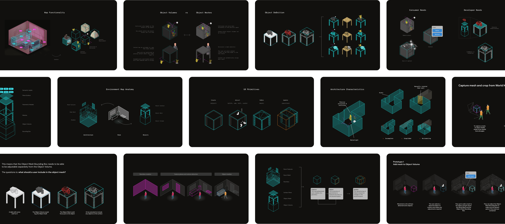
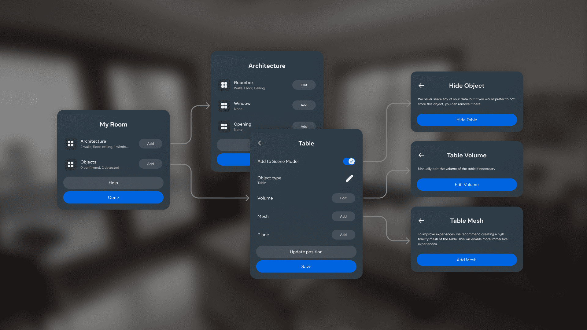
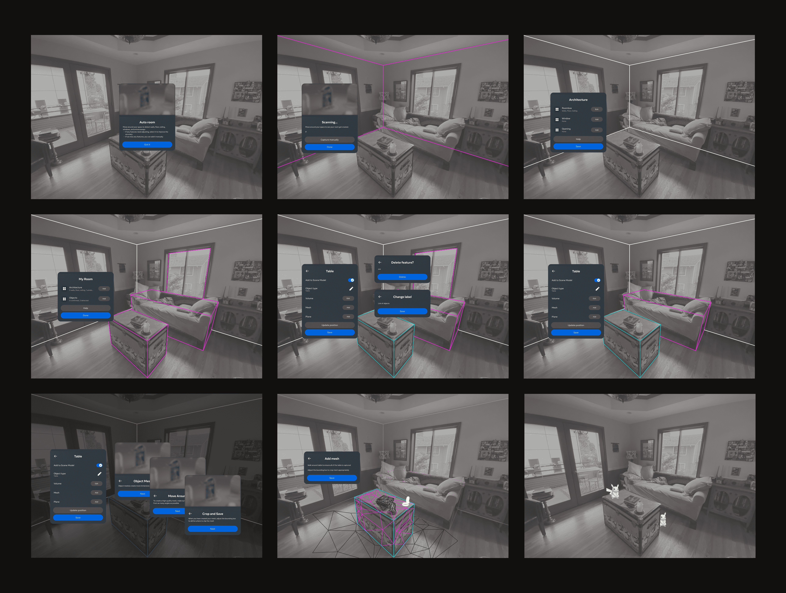

Designing the first automatic room capture experience for Quest headsets, establishing the framework that enables digital content to interact seamlessly with physical spaces.Establishing the foundational automated capture framework that enables future Quest headsets to seamlessly understand and interact with physical spaces.
Overview
Designing the first automatic room capture experience for Quest headsets, establishing the framework that enables digital content to interact seamlessly with physical spaces.
Opportunity
Design an experience framework that could:
- Transition users from a tedious, manual mapping process to a seamless, automated capture experience.
- Define exactly what 3D data was required to support complex, 3rd-party developer use cases.
- Create a system flexible enough to handle diverse physical environments, from small box rooms to open-plan offices.
Challenge
The core tension sat between our ideal user experience and the reality of emerging technology:
- We all knew the ideal UX: the user simply looks around and the room maps itself. However, the tech was in its infancy and couldn't support that yet.
- Unknowns in computer vision capabilities meant I had to plan for a massive spectrum of technical variance and edge cases.
- The system had to gracefully handle moments when detection succeeded, failed entirely, or provided inaccurate data.

Approach
I focused on balancing technical feasibility with usability and user control:
- Facilitated workshops with engineering, experience teams, and developers to synthesize the requirements for long-term MR experiences.
- Explored a wide spectrum of UX solutions, ranging from lower tech reliance (poorer UX) to higher tech reliance (better UX).
- Because development timelines required us to lock in UX solutions before the tech was operational, I worked with a small engineering team to build a "faked data" prototyping environment. This allowed us to simulate hardware inaccuracies and test our UX variations early.
Execution
We launched a structured, three-step capture process: users capture the room boundary first, followed by automated detection of 2D planes and 3D volumes, and finally the addition of 3D meshes.
While it wasn't the magical "one-glance" solution we initially dreamed of, this phased approach gave the emerging tech a greater chance of success. More importantly, it provided users with a clear, structured workflow to assist the system when needed, successfully taking the crucial first step toward fully automated capture on the Quest.

